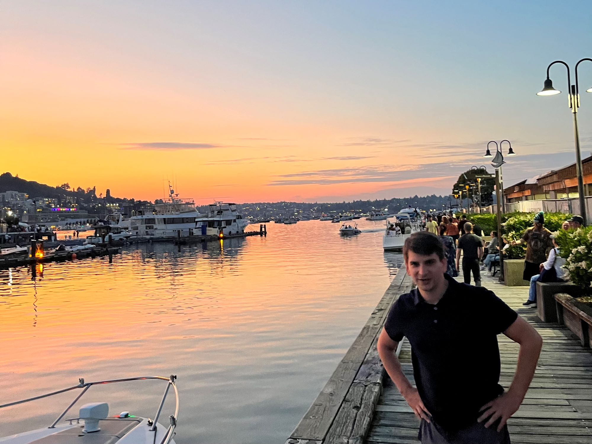

Welcome to my PS70 portfolio! I hope you enjoy learning more about my project for PS70: Intro to Digital Fabrication.
About Me
Hello! I'm Thomas, a senior at Harvard studying stats and math. I'm looking forward to learning more about electronics and digital fabrication this spring in PS70! Please enjoy this set of progress bars that I liked too much to remove from the template, though I don't fully understand their purpose.
Skills
-
Enthusiasm! | 99%
-
Math | 90%
-
Programming | 75%
-
Documentation-Reading | 25%
-
UX/UI Design | 10%
-
3D Modelling, Electronics, CNC milling, woodworking | 0%
Biography
I'm from Walla Walla, a (formerly small, now solidly mid-sized) town in southeastern Washington State. We're home to a few colleges, most notably Whitman, a growing wine country (producing incredible cabs and probably the best Syrahs in the country due to our renowned Rocks District), and a large agricultural sector, with our most famous product, the Walla Walla sweet onion, being the Washington State Vegetable (and the subject of one of the earliest trade partnerships negotiated by Trader Joe's, propelling the onion into superstardom overnight!).
When not digitally fabricating, I love music and walking around. I love music so much that I went to school for a bit in Northern Michigan to do it full-time until the pandemic hit. To practice some HTML/CSS/JavaScript that I haven't been exposed to, I've included some media below on both of these themes.
Outside
Here is a slideshow of some of my favorite pictures from places I've been recently in Washington, Oregon, Minnesota, and New Hampshire!1 / 20
The Blue Mountains, south of Walla Walla.
2 / 20
Mormon Grade, a popular country road named after its connection to the Mormon separatist commune, called the Davies Community.
3 / 20
Walla Walla was once the floor of a massive ocean, as evidenced by its rolling hills.
4 / 20
The sun setting near Horseshoe Bend, south of Walla Walla, in the Blue Mountain foothills.
5 / 20
Fellow Harvard Student Mira Becker taking pictures between the Twin Sisters in Wallula Gap, two enormous basalt columns which feature prominently in Cayuse legend.
6 / 20
Diablo Lake in North Cascades National Park, as seen from Sourdough Lookout Trail.
7/ 20
"Is anything burning? //
The sun itself! Dying /
Pooping out, exhausted /
Having produced brontosaurus, Heraclitus /
This rock, me, /
To no purpose /
I tell you anyway (as a kind of loving) . . ."
—Sourdough Mountain Lookout, by Philip Whalen
8 / 20
North Bend, seen from Mount Si Trail (Big Si) — the most-travelled hike in Washington State.
9 / 20

Lake Union seen on the fourth of July from Lake Union Park, in downtown Seattle.
10 / 20
Me, in front of Colchuck Lake, near Leavenworth, WA.
11 / 20
Lake Angeles, seen from the Klahhane Ridge Loop in Olympic National Park.
12 / 20
Me, once more in front of the Olympics in the Washington penninsula.
13 / 20

One of the Crystal Lakes in Mount Rainier National Park with the mountain itself peeking over the treetops.
14 / 20
The Haystack, viewed from Cannon Beach, Oregon.
15 / 20
The northern Oregon coastline as seen from atop the Great Dune in Pacific City.
16 / 20
The view from atop one of the hills in Mont-Orford National Park, near Montreal.
17 / 20
Some rocks near Star Lake, just south of Madison Spring Hut in the White Mountains.
18 / 20
On a HOC hike covering Mount Madison and Adams, again in the New Hampshire Whites.
19 / 20
The cliffs above Lake Michigan in Tettegouche state park, in northern Minnesota.
20 / 20
A Walla Walla sunset.
Music
I play the flute and the piccolo. This has allowed me to got to a lot of cool places and play some really exciting music! I've included below a few samples of my (now pretty out-of-date) recordings.
Here's my recording of the Nielsen Flute concerto, recorded in Walla Walla at St. Paul's Episcopal Church in the winter of 2021. This is one of the all-time classic flute pieces, and is played often for competitions and auditions due to its contrasting lyrical and highly technical sections.
This is Telemann's second fantasia, a Baroque piece written for solo flute (or recorder). Telemann wrote 12 of these solo flute works, and possibly wrote 12 more (or maybe his son or a colleague did). They're all split into (usually 4) movements, alternating fast and slow sections. They're a ton of fun to play, and I think they sort of form the core of the flute rep. I recorded this at Interlochen for some sort of competition, but I don't remember which.
Just to try one new HTML tag, I've also embedded a video from my (now defunct) practice account. This is a clip from the beginning of the Chaminade Concertino, which was perhaps the single most well-known solo flute piece when I was growing up due to popular recordings by James Galway and Jasmine Choi. It's one of the vanishingly few pre-21st-century flute pieces written by a woman, and was commissioned to serve as a contest piece for the Paris Conservatory's flute exam.
I hope you enjoyed visiting my website! Feel free to check out my Projects for more information about what I've been up to.